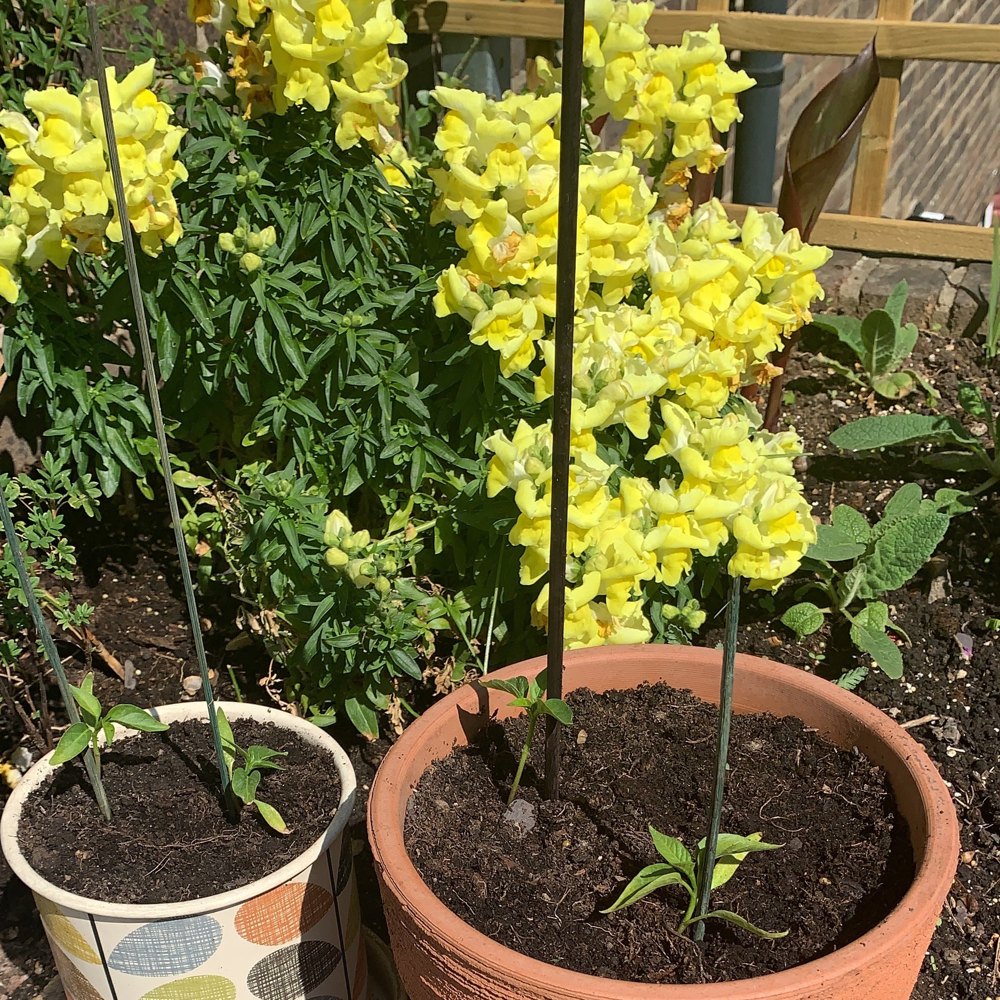
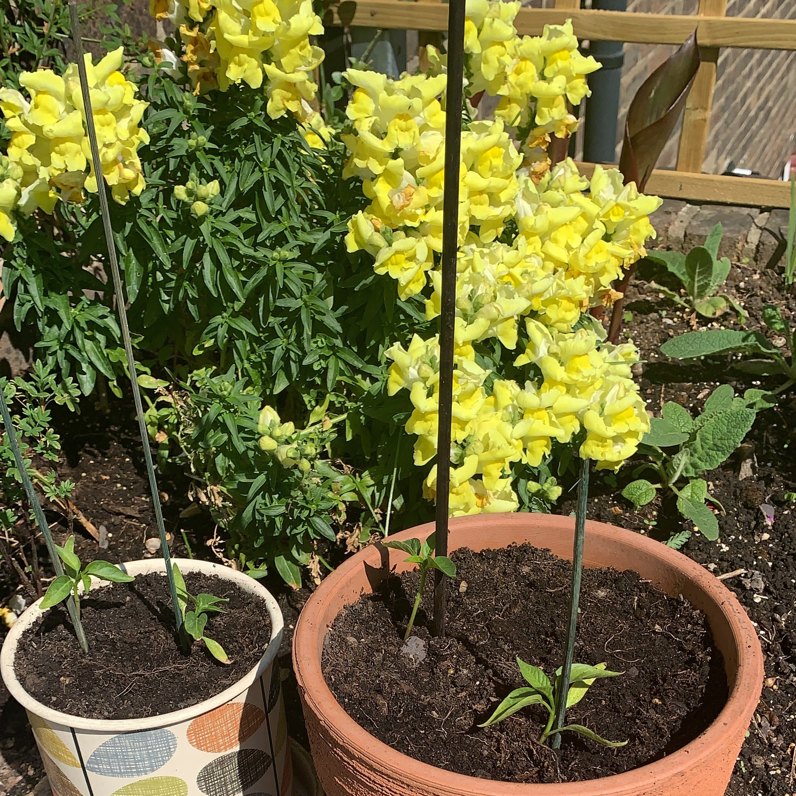

Ashley Mortimer
Web Designer
New up and coming Web Designer. Creative individual looking to learn and develop in the field of web design.
After nearly 23years grafting and working for the sandwich emporium know as Pret, I have decided to go back to my roots in art and design and pursue my dreams.
Projects
View selected projects below.
 

In this section you will find examples of my passions and projects which I am working on in life. As well as having a keen interest on all things Art & Design, I enjoy cooking and gardening.
I am undergoing a career change at the moment and looking to expand my knowledge in coding and developing/designing websites.
Work Experience
Experienced General Manager, running airport, flagship and multi-site stores.
Senior General Manager
Pret
1998 - 2020
Job summary goes here. Add as many paragraphs as you need.
Optional list:
- Delete this list if you don't need it.
- Created
- Lead
- Responsiblities
Education
Central St.Martins - College of Art and Design
Ba(hons): Fine Art - Painting 1995-1998
Ba(hons): degree 2.2,
'How to Kill a Water Monster' organiser and exhibitor, Islington 1998.
Kent Insititute of Art and Design
Foundation BTEC in Art and Design
West Kent College
A-level - Graphic design: A, Comunications and Media Studies:B, History of Art: C.
Hayesbrook High School
GCSE - 5 x B grades, 3 x C grades, 1 x D grade